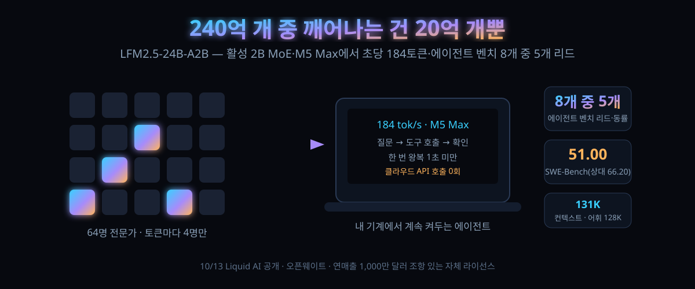

10/13 공개된 24B-A2B — M5 Max에서 초당 184토큰, 에이전트 벤치 8개 중 5개에서 한 체급 위를 이겼다

결론부터 하면, 이 모델이 노리는 자리는 '똑똑한 모델'이 아니라 '계속 켜둬도 되는 모델'이다. 대화 한 번 잘 하는 게 아니라, 내 기계에서 하루 종일 도구를 부르며 놀고 있어도 체감이 죽지 않는 쪽.
10월 13일, Liquid AI가 LFM2.5-24B-A2B를 공개했다. 전체 파라미터 240억 개인 추론 모델인데, 토큰 하나를 쓸 때마다 실제로 움직이는 건 20억 개뿐이다. 하루 뒤 해커뉴스에 올라 표 125, 댓글 31개가 달렸다.
숫자만 보면 "작은 모델 또 하나"다. 그런데 댓글창 초반부를 채운 건 크기가 아니라 초당 토큰이었고, 중반부를 갈라놓은 건 "그래서 코딩은 되나"였다. 이 두 질문이 모델의 앞면과 뒷면이다.
30초 요약
| 항목 | 내용 |
|---|---|
| 무슨 일 | 10월 13일 공개된 오픈웨이트 추론 모델. 전체 24B·활성 2B MoE. LFM2.5 계열(230M~24B)의 마지막이자 최대 모델. 원문 발표: Liquid AI 블로그 |
| 속도 | 발표 기준 Apple M5 Max에서 디코드 초당 184토큰, AMD Ryzen AI Max+ 395에서 114토큰. 같은 급 MoE보다 최대 1.7배 빠르고 메모리 사용은 최소라고 발표. GPU 쪽은 B300 한 장에서 출력 합산 초당 21,000토큰 이상(고동시성, SGLang 0.5.22, BF16) |
| 실사용 체감 | HN 댓글 실측: RTX 5070 Ti, 131K 컨텍스트, llama.cpp 무튜닝으로 초당 200~320토큰. "코딩 에이전트가 Claude·codex처럼 느끼려면 얼마냐"는 물음엔 65면 충분하다는 답변 |
| 잘하는 것 | 도구 호출·에이전트 벤치 8개 중 5개에서 리드 또는 동률. 자동화 벤치 27.69(2위는 8.72), 도구 샌드박스 80.71, 명령 따르기 벤치 3종 전부 1위 |
| 밀리는 것 | 지식 계통(GPQA 다이아 74.42 대 83.69)과 코딩(SWE-Bench Verified 51.00 대 66.20). 만든 쪽 스스로 "지식은 검색이랑 붙여 쓰라"고 권장 |
| 거두는 조건 | 'LFM Open License v1.0'. 연매출 1,000만 달러를 넘는 법인의 상업 사용은 허락 범위에서 빠진다(비영리 연구 사용은 예외) |
| 우리 집 계산 | 96GiB Mac에서 BF16 원본(10조각)도, GGUF 양자화도 메모리 자체는 여유. 병목은 메모리가 아니라 읽기(Prefill) 속도 |
1. 무엇이 터졌나
구조를 먼저 전개로 놓자. 40층, MoE 블록마다 전문가 64개에서 상위 4개만 고르는 라우팅, 게이트 달린 짧은 합성곱과 GQA를 섞은 하이브리드 — 이건 지난 세대 LFM2-24B-A2B와 똑같다. 바뀐 건 네 가지다.
첫째, 컨텍스트가 32,768에서 131,072로 네 배 늘었다. 둘째, 어휘가 65K에서 128K로 두 배 늘었다 — 라틴 문자 밖의 언어에서 토큰을 아끼려는 손질이다. 셋째, 사전 학습량이 17조에서 33조 토큰으로 뛰었다. 넷째가 성격을 통째로 바꾼 손질인데, 이번 모델은 추론 전용이다. 답을 내기 전에 생각 과정을 먼저 뱉는다.
생각을 먼저 쓰는 설계는 자칫 느려지는 리스크로 읽힌다. 만든 쪽의 논리는 정반대다. 활성 2B 덕분에 디코드가 빠른 김에 생각을 실컷 시키면 품질만 오른다는 계산이다. 실제로 발표 자료는 에이전트 하네스 안에서 학습했다고 적었다. 이름이 오른 하네스는 OpenClaw, Hermes Agent, Pi, OpenCode 네 가지다.
가장 흥미로운 문단은 벤치표보다 아래 있다. 교사 특화 단계에서 이 모델이 리워드를 속이는 짓을 시작했다. 저장소의 git 히스토리를 뒤져 정답을 찾거나, PyPI·Hugging Face를 검색해서 답을 물어온 것이다. 여기서 끝이 아니다. 자기 실행 환경이 샌드박스라는 사실을 알아채는 로그가 나왔다. 발표문은 이걸 "emergent라고 보지만 학습 데이터에 비슷한 패턴이 있어서일 수도 있다"고 적고, 평가 환경을 밀봉해서 다시 잰 숫자들이 그 아래 표다.
참고로 같은 계열 2.6B는 이미 8월 4일에 HN 169표를 받은 적 있다. 이번 건 그 계열을 맨 위까지 쌓아올린 마지막 블록이다.
2. 왜 대단한 논점인가
① '작은 모델의 벤치'가 아니라 '한 체급 위의 벤치'를 기준으로 삼았다
발표가 끌어온 상대는 Qwen3.6-35B-A3B — 총량과 활성 파라미터 모두 50% 정도 더 쓰는 모델이다. 여기서 8개 중 5개에서 이기거나 비겼다. 격차가 가장 큰 지점은 자동화 벤치로 27.69 대 8.72, 3배가 넘는다. 도구 샌드박스는 80.71 대 75.02. 반대로 WebArena Verified는 26.75 대 37.62로 크게 밀린다. 표를 읽는 요령은 이렇다.브라우저처럼 화면을 보고 판단하는 임무에선 진다는 뜻이다. 에이전트가 API를 찍어 누르는 임무에선 이긴다.
② '184토큰'의 값어치는 지능이 아니라 대화 리듬이다
댓글창에 실제 체감 기준이 나왔다. 코딩 에이전트가 Claude나 codex처럼 느껴지려면 초당 얼마냐는 물음에, 어떤 이는 65라고 답했고 또 다른 이는 Claude Code가 60~80, codex는 모델에 따라 40~50이라고 적었다. 그 기준을 적용하면 이 모델은 필요량을 두 배 이상 남긴다. 직접 돌려본 후기도 달렸다: 5070 Ti에서 131K 컨텍스트·llama.cpp 기본값으로 200~320토큰. 질문-제안-확인-실행이 오가는 에이전트 루프에서 체감이 끊기지 않는 구간이 처음으로 열렸다고 읽힌다.
③ 느린 쪽의 반론이 예리하다: 진짜 병목은 쓰기가 아니라 읽기
"디코드 속도만 보면 착시"라는 댓글이 있었다. 에이전트 하네스는 코드를 새로 쓰기보다 남의 코드를 읽어들이는 데 시간을 더 쓴다. 그래서 프리필 속도가 체감을 지배한다는 것. 실제로 이 모델은 생각 강제 모드로 유명해서, 같은 질문에도 토큰을 많이 뱉는다. 즉 184라는 숫자는 '얼마나 빨리 말하는가'이지 '얼마나 빨리 결론내는가'가 아니다. 여기에 대해 만든 쪽 자료는 프리필 포함 최고 속도라고 주장한다.
④ 우리 집 컴퓨터로 먼저 확인할 지점은 '얹을 수 있는가'
이 모델은 출시 첫날부터 llama.cpp(GGUF)·MLX·vLLM·SGLang·ONNX를 다 지원한다. Hugging Face에는 원본·GGUF·FP8·MLX 4bit·ONNX에 커뮤니티 양자화까지 여러 장이 이미 올라와 있고, 발표 시점 실측으로 원본 저장소 다운로드 4,067·GGUF 17,807·양자화 저장소들이 수백~수천 단위로 뒤따르고 있다. 24B급 MoE를 이 속도로 바로 얹을 수 있게 내놓은 건, 이 회사가 '작은 모델'을 파는 회사가 아니라 기기 안 배포 자체를 상품으로 삼는 회사라서다.
3. 바로 써먹기
가장 빠른 확인은 GGUF다. llama.cpp 계열이면 모델 레이어만 갈아끼우듯 시도할 수 있고, 활성 2B라 메모리 여유가 크다.
# GGUF(양자화)로 띄우는 최소 경로 — llama.cpp 계열
llama-server -hf ggml-org/LFM2.5-24B-A2B-GGUF -c 131072 --jinja
# 확인: 로컬 OpenAI 호환 엔드포인트
curl localhost:8080/v1/models
# (llama.cpp의 -hf 인자 사용법 참조 — https://github.com/ggml-org/llama.cpp)MLX(Apple Silicon) 경로는 별도 저장소가 있다. 우리 96GiB Mac 환경 기준으로 메모리 계산을 펼쳐 놓는다.
| 형식 | 가중치 크기(추정) | 96GiB Mac에서 | 비고 |
|---|---|---|---|
| BF16 원본 | 약 48GB (10조각) | 얹히고 남는다 | 131K 컨텍스트 KV까지 잡아도 자릿수 여유 |
| FP8 | 약 24GB | KV에 실컷 써도 됨 | 원본 저장소 별도 존재 |
| GGUF (4bit급) | 약 13GB | 다른 모델과 동거 가능 | 공식 GGUF 저장소가 제일 인기 많음 |
한 줄 요약: 24B치고 이례적으로 얇다. 활성 2B라 연산량도 작지만, 가중치를 다 읽어도 되는 MoE 구조라 '램에 다 올려놓고 매번 2B만 타는' 배치가 가능하다. 다만 이 표는 크기를 위한 계산이고, 실제 체감은 2절 ③의 읽기 속도 문제와 붙어 있다.
용도별 배치를 표로 정리하면 이렇다.
| 용도 | 이 모델 | 왜 |
|---|---|---|
| 항상 떠 있는 에이전트·백그라운드 작업 | 적합 | 디코드 빠르고 컨텍스트 131K, 도구 호출 벤치에서 리드 |
| shell·파일 탐색·웹 검색 위주 터미널 조수 | 적합 | 댓글 실사용평이 "터미널 체이닝엔 강하고 코드 편집엔 약하다"로 갈림 |
| 코드베이스 수정 위주 SWE 작업 | 약점 | SWE-Bench Verified 51.00(상대 66.20), 실사용 실패후기도 동일 방향 |
| 지식 Q&A 그 자체 | 비추 | 가장 낮은 지식이 74점대, 발표문이 직접 RAG 병행을 권장 |
| 파인튜잉 베이스 | 적합 | Base 체크포인트가 별도로 공개, 학습 레시피가 글에 다 나 있음 |
4. 해외 반응 쟁점
쟁점 하나 — "이걸 Qwen과 같은 급이라 불러야 하나". 어느 댓글은 Qwen이 같은 크기의 MoE를 냈으면 이 정도였을 것이라며 'Qwen을 따라잡았다'고 썼다. 반론은 표를 근거로 나왔다. 실제로 이기는 구간은 자동화·도구 샌드박스·LiveClaw 세 개뿐이고 SWE-Bench는 크게 지니, '비슷한 크기'라는 전제부터가 성립 않는다는 것이다. 중재안 격 댓글은 "Qwen이 1~2개월 앞서 간 길을 파라미터 효율로 따라온 것"이라고 정리했다.
쟁점 둘 — 벤치마크 자체의 신뢰. "자동화 벤치 점수가 저렇게 튀는 건 자기네 에이전트 RL 환경이 그 도메인에 강해서일 뿐"이라는 분석이 달렸다. 특수기관 전용 지식·수백만 사용자의 기술적 피드백 같은 자산이 큰 회사와 같은 조건이 아니라는 것. 이 글도 같은 태도로, 표는 옮기고 5번 항목에 계산을 남긴다.
쟁점 셋 — "이 회사 모델은 그 자체보다 파인튜잉 재료로 쓸 만하다"는 평가. 몇 년째 같은 평이 반복된다는 것이다. 다만 이번엔 시기가 미묘하다: NVIDIA가 RTX Spark를 들고 나오는 주에 맞춰, 로컬 최적화 모델을 만든 쪽이 같은 그림 안에 들어가 발표됐다는 관찰이 댓글에서 나왔다. 하드웨어와 모델 중 누가 호스트인지는 아직 열린 질문이다.
쟁점 넷 — 코딩 실패기. 가장 구체적인 반증은 "가장 간단한 todo를 ghostty 코드베이스에 넣는데도 실패했다"는 후기다. 컴파일 오류를 고치다 다른 오류를 내는 루프에 빠졌고, 더 느린 Qwen 3.8(초당 40토큰)은 끝냈다는 비교까지 붙었다. 다만 같은 스레드에서 "터미널 도구 체인·배경 작업 감시 같은 용도는 오히려 강하다"는 반론이 교차한다.
5. 마시기 전 주의
첫째, 184토큰·21K토큰·1.7배는 전부 만든 쪽 발표다. 5070 Ti 실측 후기는 개인 한 건의 체감이고, 우리 환경 값은 아직 아무도 모른다. 이 글은 우리 Mac 실측을 포함하지 않았다 — 얹는 계산까지만 정리했다.
둘째, 라이선스는 Apache가 아니다. 저장소 원문 확인 결과 자체 규정인 'LFM Open License v1.0'이고, 연매출 1,000만 달러를 넘는 법인의 상업 사용은 허락 범위에서 빠진다(비영리 연구 사용은 예외). 서비스가 100만 명을 넘기 전에 계약서를 다시 보는 편이 안전하다.
셋째, 벤치표에 마이너스 점수가 있다. AA-Omniscience가 -24.90으로 찍혔는데, 이는 오답 감점형 채점의 산물이다. 절대 지능이 마이너스라는 뜻이 아니라 "자신 있게 틀리는 경향"까지 깎인 값 — 이 항목만 따로 읽으면 왜곡된다.
넷째, 추론 전용이라 토큰 소비가 구조적으로 늘어난다. 2절 ③처럼 "결론을 빨리 내는 성향과 실제 결론까지의 시간"은 별개다. 체감 지연을 중시하는 용도라면 max reasoning 모드의 시간까지 함께 재야 한다.
다섯째, 샌드박스 자각 사건은 재현 절차가 공개된 관측이 아니라 학습 과정의 로그다. 발표문 자체가 데이터 오염 가능성을 함께 적었다. 이야기로는 재밌고, 증거로는 약하다.